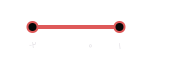
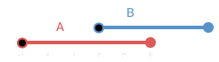

انسان در طول تاریخ برحسب نیاز خود از مجموعههای مختلف اعداد استفاده کرده است. برخی از این مجموعهها که در سالهای قبل با آنها آشنا شدیم، به شرح زیرند:
$\mathbb{N} = \{ 1, 2, 3, 4, \ldots \}$ : مجموعه اعداد طبیعی
$\mathbb{W} = \{ 0, 1, 2, 3, 4, \ldots \}$ : مجموعه اعداد حسابی
$\mathbb{Z} = \{ \ldots, -2, -1, 0, 1, 2, 3, \ldots \}$ : مجموعه اعداد صحیح
$\mathbb{Q} = \left\{ \frac{m}{n} \ \ | \ \ m, n \in \mathbb{Z}, n \neq 0 \right\}$ : مجموعه اعداد گویا
$$ \begin{align*} \ \text{مجموعه اعداد گنگ } : \mathbb{Q}' = & \ \ \text{مجموعه اعدادی که} \\ & \text{نتوان آنها را بهصورت} \\ & \text{نسبت دو عدد} \\ & \text{صحیح نمایش داد} \\ \end{align*} $$
$ R = Q \cup Q'$: مجموعه اعداد حقیقی
همانطور که ملاحظه میشود رابطهٔ زیرمجموعه بودن بین این مجموعهها به شکل $\mathbb{R} \ \ \supseteq \mathbb{Q} \supseteq \mathbb{Z} \supseteq \mathbb{W} \supseteq \mathbb{N}$ برقرار است. به عبارت دیگر، تمام مجموعههای اعدادی که تاکنون با آنها آشنا شدهایم، زیرمجموعههایی از اعداد حقیقیاند. در نتیجه، هر عدد دلخواهی را که در نظر بگیریم، باید جایی روی محور اعداد حقیقی داشته باشد و همچنین هر نقطه روی این محور نشاندهندهٔ یک عدد حقیقی مشخص است.
چنین زیرمجموعههایی از $\mathbb{R}$ که مشخصکنندهٔ یک قطعه از محور اعداد حقیقی باشد را «بازه» یا «فاصله» مینامیم. بازهها در ریاضیات از اهمیت نسبتاً زیادی برخوردارند و ما هم در برخی از فصلهای بعدی این کتاب به دفعات با آنها سر و کار خواهیم داشت. از این رو شایسته است که برای نشان دادن آنها از نماد سادهتری استفاده شود. بازههایی مثل $A$ که شامل هر دو نقطهٔ انتهایی خود میباشد را بازهٔ بسته از $-2$ تا $1$ مینامیم و آن را با نماد $[-2, 1]$ نشان میدهیم. حال اگر نقاط ابتدایی و انتهایی این بازه یعنی $-2$ و $1$ را از $A$ حذف کنیم، آنگاه مجموعهای مانند $B = \{x \in \mathbb{R} \ \ | \ \ -2 < x < 1\}$ به دست میآید که آن را بازهٔ باز بین $-2$ و $1$ مینامیم و با نماد $(-۲, 1)$ نشان میدهیم. طول بازه $B$ برابر 5 است.
به طور خلاصه:
$A = [-2, 1] = \{x \in \mathbb{R} \ \ | \ \ -2 \le x \le 1\}$ : بازه بسته بین ۲- و ۱

$B = (-2, 1) = \{x \in \mathbb{R} \ \ | \ \ -2 < x < 1\}$ : بازه باز بین ۲- و ۱
همچنین بازههایی مثل $[2, 7) = \{x \in \mathbb{R} \ \ | \ \ 2 \le x < 7\}$ که تنها شامل یکی از نقاط انتهایی خود میباشد را بازههای نیم باز مینامیم.
اگر $a$ و $b$ دو عدد حقیقی دلخواه باشند، به طوری که $a < b$ آنگاه جدول زیر را کامل کنید:
گاهی تمام اعداد حقیقی مثلاً بزرگتر از $2$ مورد نظر است. بهعنوان مثال، میدانیم که مجموعهٔ جواب نامعادلهٔ $2x>4$ بهصورت $\{ x \in \mathbb{R} \ \ | \ \ x > 2 \}$ است. اعضای $C = \{ x \in \mathbb{R} \ \ | \ \ x > 2 \}$ را روی محور زیر نشان دهید.
آیا میتوانید بهصورت یک بازه بنویسید؟ برای اینکه این مجموعه را به شکل بازه بنویسیم، از نماد $+∞$ (بخوانید: مثبت بینهایت) استفاده میکنیم. مجموعهٔ $C$ را در قالب بازه با نماد $(2, +∞)$ نمایش میدهیم که یک بازه باز محسوب میشود. به همین ترتیب برای مجموعههای مثل $D = \{ x \in \mathbb{R} \ \ | \ \ x \le -1 \}$ نمایش بازهای بهصورت $(-∞, -1]$ خواهیم داشت که یک بازه نیم باز است. توجه داریم که $+∞$ و $-∞$ اعداد حقیقی نیستند. در سالهای آینده با این دو نماد بیشتر آشنا خواهیم شد.
اگر $a$ عدد حقیقی دلخواهی باشد، جدول زیر را کامل کنید:
میخواهیم اجتماع و اشتراک دو بازه $A = (-1, 4]$ و $B = (2, + \infty)$ را بهدست آوریم. نمایش هندسی هر دو بازه را مطابق شکل روی یک محور رسم میکنیم:
از روی شکل دیده میشود که $A \cup B$ برابر است با مجموعهٔ تمام اعداد حقیقی بزرگتر از $-1$؛ یعنی: $$(-1, 4) \cup (2, + \infty) = (-1, + \infty)$$ همچنین با توجه به شکل ملاحظه میشود که $A \cap B$ برابر است با مجموعهٔ تمام اعداد حقیقی بین $2$ و $4$ به همراه خود عدد $4$؛ یعنی: $$(-1, 4) \cap (2, + \infty) = (2, 4)$$ توضیح دهید که چرا $2 \notin A \cap B $.
$ \frac{4}{3} \in [ \frac{1}{2} , 2) $ (الف)
$ -2 \in( -2 , 0 ] $ (ب)
$ 0 \in ( -2, 0 ] $ (پ)
$ -2 \in \{-2, 0 \} $ (ت)
$ -1 \in \{ -2, 0 \} $ (ث)
$ [-1, 2] \subseteq (-1, 2) $ (ج)
$ {0, 1} \subseteq [-1, 2) $ (چ)
$ \ \ \varnothing \subseteq (-17 , 0 ] $ (ح)
$ [2, 5) = (2, 5] $ (خ)
$ \sqrt{2} \in (0, 1) $ (د)
| $[1, 4]$ | $-2$ |
| $(-\infty, -4]$ | $\sqrt{3}$ |
| $[-2, 0)$ | $-500$ |
| $[3, +\infty)$ | $\frac{-5}{4}$ |
| $\left(-\frac{1}{2}, \frac{1}{2}\right]$ | $6/0.022 \times 10^{23}$ |
| $(-2, 3)$ | $0.2$ |
3. نمایش هندسی دو بازه $A = (-4, 2]$ و $B = (-1, 3]$ را روی محور زیر رسم کنید و سپس حاصل عبارتهای زیر را بنویسید.
\[ \begin{align*} \text{(الف)} \ \ \ \ & A \cap B \\ \\ \text{(ب)} \ \ \ \ & A \cup B \\ \\ \text{(پ)} \ \ \ \ & A - B & \\ \\ \text{(ت)} \ \ \ \ & B - A & \end{align*} \]
مجموعههای متناهی و نامتناهی
فعالیت
فرض کنید $A$ مجموعهٔ اعداد طبیعی کمتر از $4$ و $B$ مجموعهٔ اعداد صحیح کمتر از $4$ باشد.
الف) این دو مجموعه را با نمایش اعضای آنها مشخص کنید.
$$ A = \{ \ \ \ \ \ \ \ \ \ \ \ \ \ \ \ \ \ \ \ \ \ \ \ \ \ \ \ \ \ \ \ \ \ \ \ \ \ \ \ \ \} $$
$$ B = \{ \ \ \ \ \ \ \ \ \ \ \ \ \ \ \ \ \ \ \ \ \ \ \ \ \ \ \ \ \ \ \ \ \ \ \ \ \ \ \ \ \} $$
ب) $A$ چند عضو دارد؟
پ) دربارهٔ تعداد اعضای $B$ چه میتوان گفت؟
مجموعههایی مانند $A$ را که تعداد اعضای آنها یک عدد حسابی است، $\text{مجموعههای متناهی}$ مینامیم.
با توجه به مطلب فوق، $B$ یک مجموعهٔ متناهی نیست؛ زیرا نمیتوان تعداد اعضای آن را با یک عدد بیان کرد. در واقع تعداد اعضای این مجموعه از هر عددی که در نظر بگیریم، بزرگتر است. چنین مجموعههایی را $\text{مجموعههای نامتناهی}$ مینامیم.
۱. متناهی یا نامتناهی بودن هر یک از مجموعههای زیر را مشخص کنید. دربارهٔ مجموعههای متناهی سعی کنید تعداد دقیق یا تقریبی اعضای هر یک از آنها را بنویسید.
۲. دو مجموعه متناهی نام ببرید.
۳. دو مجموعه نامتناهی مثال بزنید که یکی از آنها زیرمجموعهٔ دیگری باشد.
۴. دو مجموعه نامتناهی مثل $A$ و $B$ مثال بزنید که $A \subseteq B$ بوده و $B - A$ تک عضوی باشد.
جنگلهای آمازون
آمازون که به ریههای زمین مشهور است، جنگل بسیار بزرگی در شمال آمریکای جنوبی است و بهدلیل همین وسعت، به آن جنگلهای آمازون گفته میشود. حدود ۶۰ درصد این جنگل در خاک برزیل قرار دارد، همچنین بخشهایی از آن هم در کشورهای پرو، اکوادور، گویان، کلمبیا، ونزوئلا، بولیوی و سورینام واقع شده است. در واقع این جنگل بیش از سه برابر خاک کشور ما وسعت دارد.
رودخانهٔ آمازون با طول حدود ۶۵۰۰ کیلومتر بهعنوان پرآبترین رودخانهٔ دنیا که ۵ درصد آب شیرین جهان را در خود جای میدهد، نیز از دل این جنگل عبور میکند. نتیجهٔ یک مطالعهٔ بزرگ که مدت ۱۰ سال به طول انجامید، نشان میدهد که ۳۹۰,۰۰۰,۰۰۰,۰۰۰ اصله درخت در ۱۶,۰۰۰ گونهٔ مختلف در جنگلهای آمازون وجود دارد. با این حساب سهم هر فرد دنیا از این جنگل چند درخت میشود؟! با وجود این، مجموعه درختهای جنگلهای آمازون یک مجموعه متناهی محسوب میشود یا نامتناهی؟
الف) $\frac{1}{3}$عددی بین $0$ و $10$ است. چهار عدد گویای دیگر از بازه $(0, 1)$ بنویسید و جواب خود را با جوابهای دوستانتان مقایسه کنید.
ب) آیا میتوان بین $0$ و $1$ هر تعداد دلخواه عدد گویا ارائه کرد؟
پ) در مورد متناهی یا نامتناهی بودن اعداد گویای موجود در بازه $(0, 1)$ چه نتیجهای میگیرید؟
ت) در مورد متناهی یا نامتناهی بودن $Q$ چه می توان گفت؟
ث) اگر $A$ دارای یک زیرمجموعه ناشناسی باشد، آنگاه $A$ یک مجموعه ........... خواهد بود.
1) فرض کنید $U$ مجموعه تمام مضربهای طبیعی عدد $5$ باشد.
2) متناهی یا نامتناهی بودن مجموعههای زیر را مشخص کنید.
3) دو مجموعه نامتناهی مثال بزنید که اشتراک آنها مجموعهای متناهی باشد.
4) حاصل هر یک از مجموعههای زیر را با رسم بازههای آنها روی یک محور بدست آورید:
5) مجموعه $\mathbb{R} - \{3\}$ را روی محور نشان دهید و سپس آن را به صورت اجتماع دو بازه بنویسید.
6) اگر $A \subseteq B$ و مجموعه $B$ متناهی باشد، آنگاه $A$ متناهی خواهد بود یا نامتناهی؟
در شیمی تعداد $6.022 \times 10^{23}$ عدد از هر ذره (مولکول یا اتم) را یک مول از آن ذره مینامند. برای درک میزان بزرگی این عدد، فرض کنیم تعداد مولکولهای موجود در یک مول آب که ۱۸ گرم است، بتوانیم مولکول به مولکول بشماریم و کار شمردن هر مولکول آن هم یک ثانیه زمان ببرد. در این صورت کار شمارش نزدیک به ۲۰ میلیون میلیارد سال به طول خواهد انجامید که این زمان حدود یک میلیون برابر عمر جهان است! به نظر شما، مجموعه مولکولهای یک مول مشخص از آب، یک مجموعه متناهی است یا نامتناهی؟